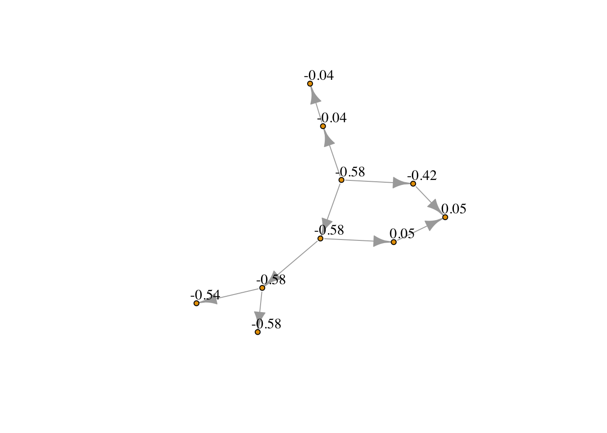
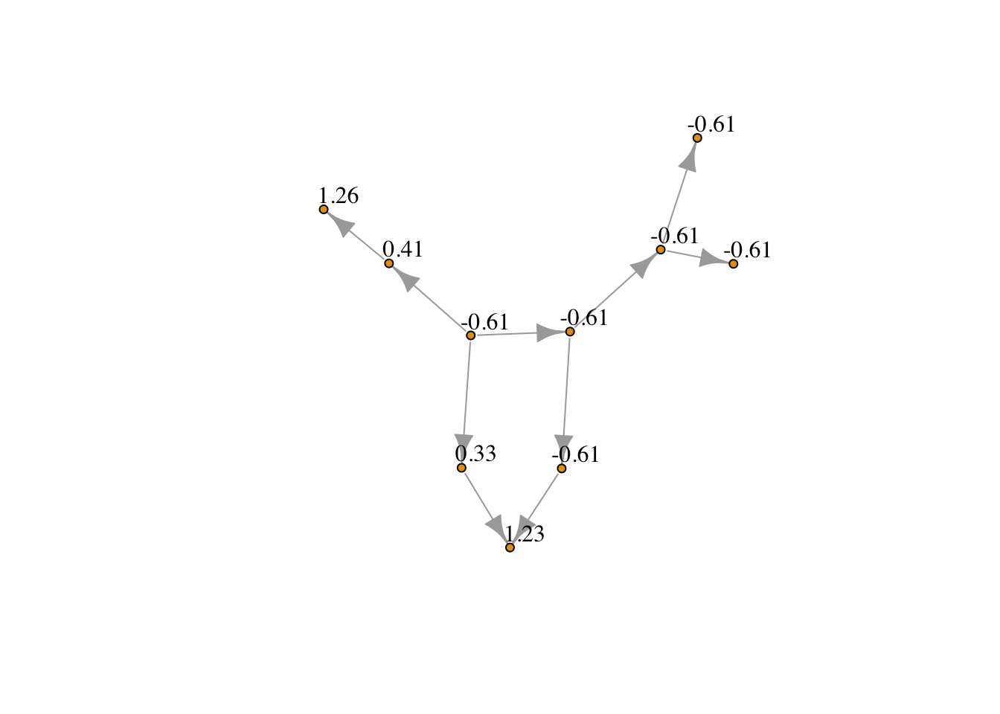

The goal of IsotoneOptimization is to implement the Sequential Block Merging algorithm for solving isotonic regression with constraints represented by arbitrary directed acyclic graph.
Installation
You can install the development version of IsotoneOptimization from GitHub with:
# install.packages("devtools")
# devtools::install_github("Xiwen1997/IsotoneRpkg") ## original version with only quadratic objectives
# devtools::install_github("imn167/IsotoneOptimization") ## version with quadratic and Huber-type losses Example
This is a basic example which shows you how to solve a general isotonic regression problem:
library(IsotoneOptimization)
## basic example code
Emat <- t(matrix( c(1,2, 1,3, 1,4, 2,5, 2,6, 3,7, 4,8, 5,8, 6,9, 6,10),2,10))
# quadatic
x_ordered <- solve_isotone_DAG(rnorm(10), rep(1,10), Emat)$x
# Huber
x_ordered_huber <- solve_isotone_DAG(rnorm(10), rep(1,10), Emat, loss = "huber", delta = .5)$xUsing package igraph, we can better view the ordered vector by regarding isotonic constraints as the edges of a graph. Namely, if there exists an arrow from node to node
library(igraph)
#>
#> Attaching package: 'igraph'
#> The following objects are masked from 'package:stats':
#>
#> decompose, spectrum
#> The following object is masked from 'package:base':
#>
#> union
grid_graph <- graph_from_edgelist(Emat)
V(grid_graph)$name <- as.character(round(x_ordered,2))
plot(grid_graph, vertex.size = 4, # Smaller nodes
vertex.label = V(grid_graph)$name, # Set the labels
vertex.label.cex = 1, # Slightly smaller font
vertex.label.dist = 1.4, # Offset the labels
vertex.label.color = "black")
Projection Under Quadratic Loss
library(igraph)
grid_graph <- graph_from_edgelist(Emat)
V(grid_graph)$name <- as.character(round(x_ordered_huber,2))
plot(grid_graph, vertex.size = 4, # Smaller nodes
vertex.label = V(grid_graph)$name, # Set the labels
vertex.label.cex = 1, # Slightly smaller font
vertex.label.dist = 1.4, # Offset the labels
vertex.label.color = "black")
Projection Under Huber Loss w Hyperparameter .5
Some typical isotonic constraints, including chain, binary tree, 2d-grid isotonic constraints, can be defined directed. Simply using solve_isotone_chain, solve_isotone_binary_tree, and solve_isotone_2d_grid, you can solve the corresponding isotone optimization problem!